Restaurant · Place du Monument
Le Relaisde Cerfontaine
Une cuisine simple et soignée, des assiettes généreuses et une terrasse sous les sapins, à quelques minutes des lacs de l'Eau d'Heure.
Du jeudi au dimanche
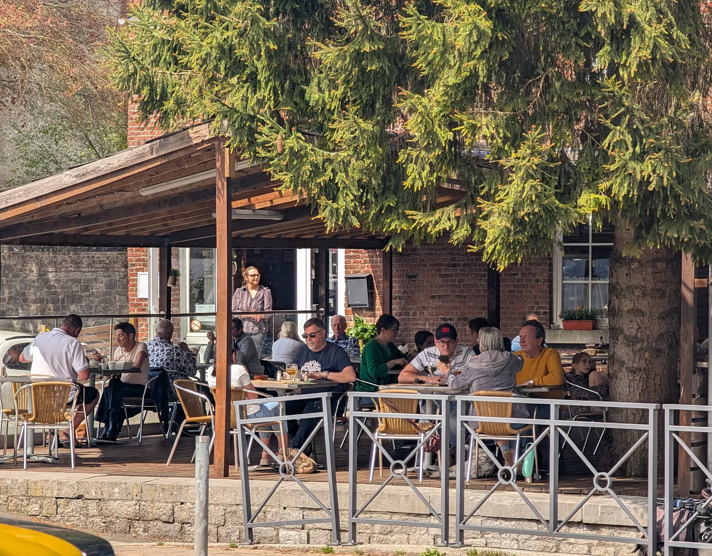
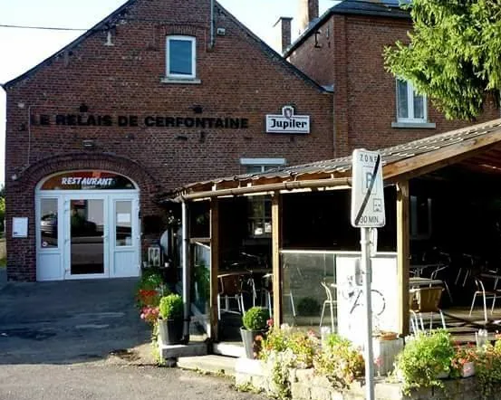
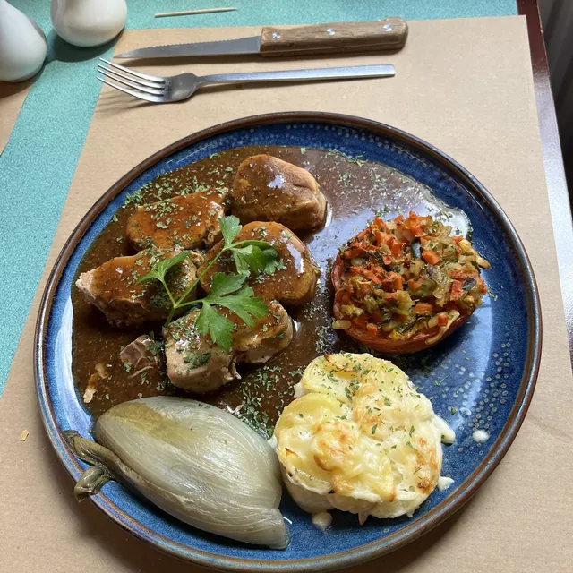
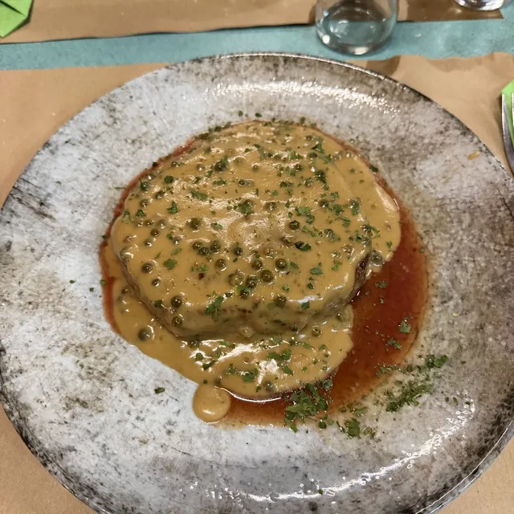
- Des assiettes généreuses
les plats sont très généreux
: le compliment qui revient dans les avis. - Midi et soir le week‑endJeudi et vendredi soir, samedi et dimanche midi et soir.
- Mieux vaut réserver
Réservation souhaitée, l'endroit est très fréquenté.
Alain D.
Dans l'assiette
Viandes en sauce, poisson, omelettes, crêpes : des plats de brasserie, servis copieusement.
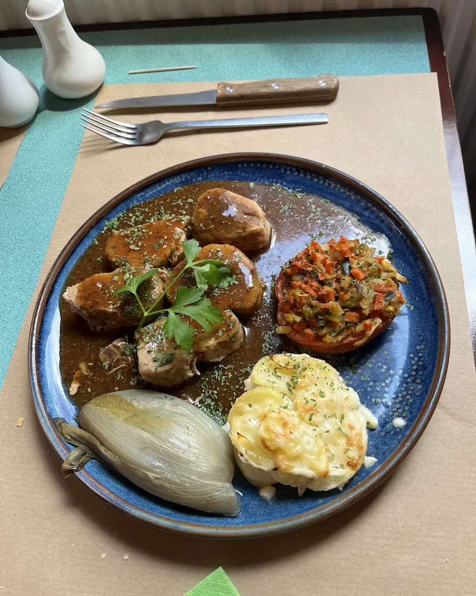
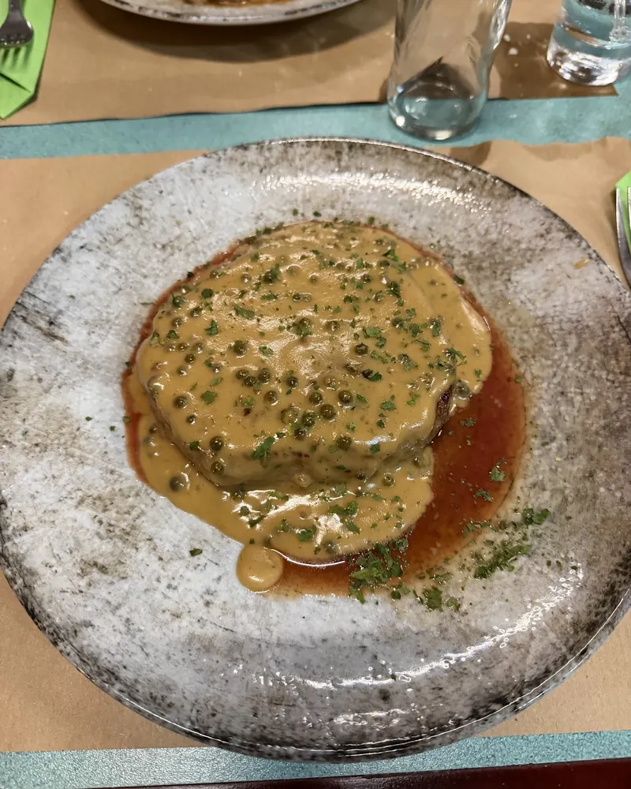
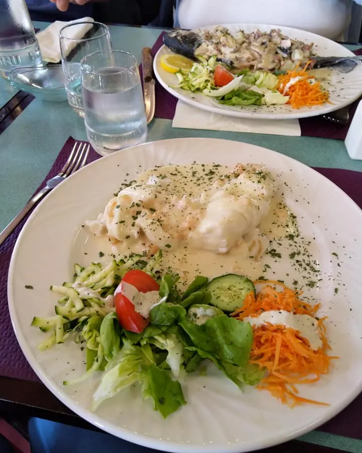
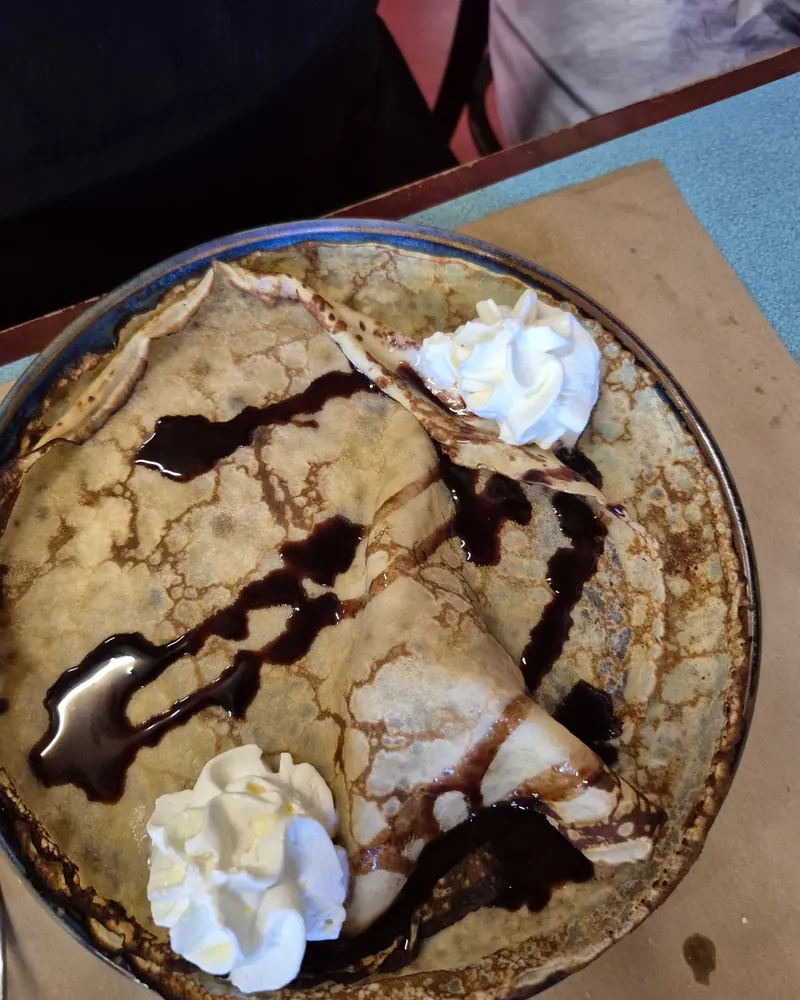
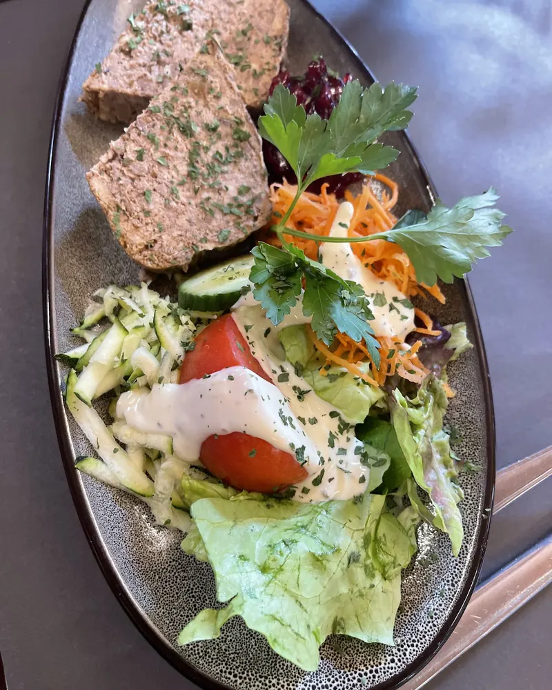
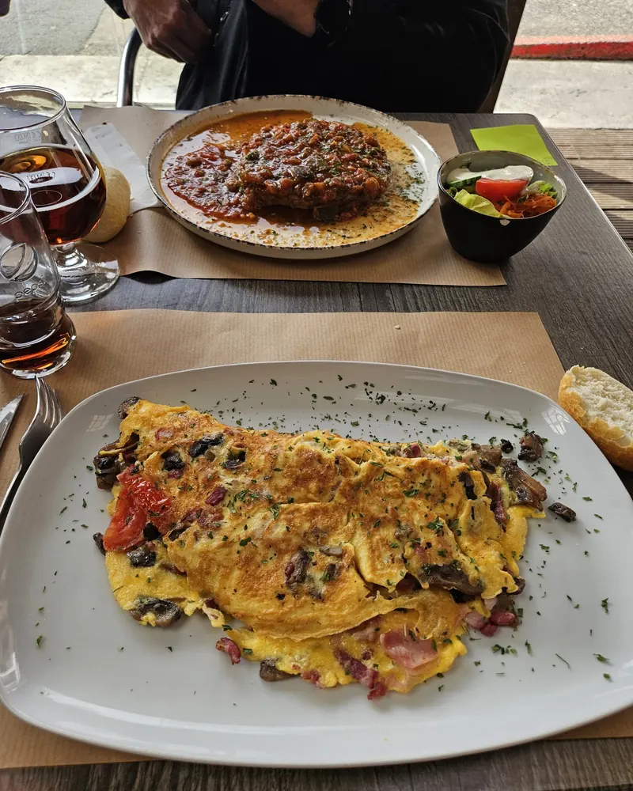
Réserver une table
Choisissez le jour, le service et le nombre de couverts : la salle se remplit vite, surtout le dimanche midi.
Ce qu'on y mange
Les plats que les clients citent dans leurs avis Google, avec leurs mots.
Les viandes
Steak sauce Sambre et Meuseune spécialité locale, accompagnées de frites maison onctueuses
Stéphane D.
Le steak, l'entrecôteLes cuissons étaient comme demandées.
Avis Google
Bœuf, demi-pouletBœuf, demi-poulet et poisson, rien à dire !!!
Stéphane D.
Entrées et poissons
Croquettes asperges et Serranooriginales et très bien préparées
Stéphane D.
Les moulesNous avions pris les moules et impeccable.
Armelle M.
La carte des vinsSuper carte des vins.
Julie V.
Desserts et à-côtés
Glaces artisanalesExcellentes glaces artisanales.
Stéphane D.
Crêpe glace vanille et chocolatPetit dessert pour finir ce bon repas
Armelle M.
À l'apérodu pain du beurre et des cacahuètes ou chips avec l'apéro
Cindy P.
La carte complète et les suggestions se découvrent sur place. Une question ? 0476 71 35 89
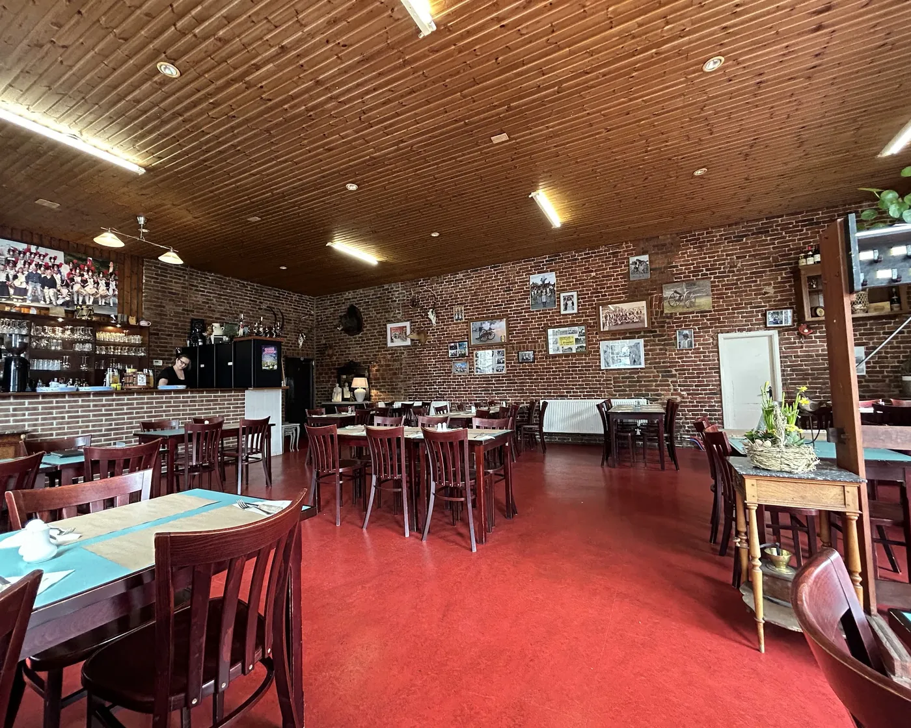
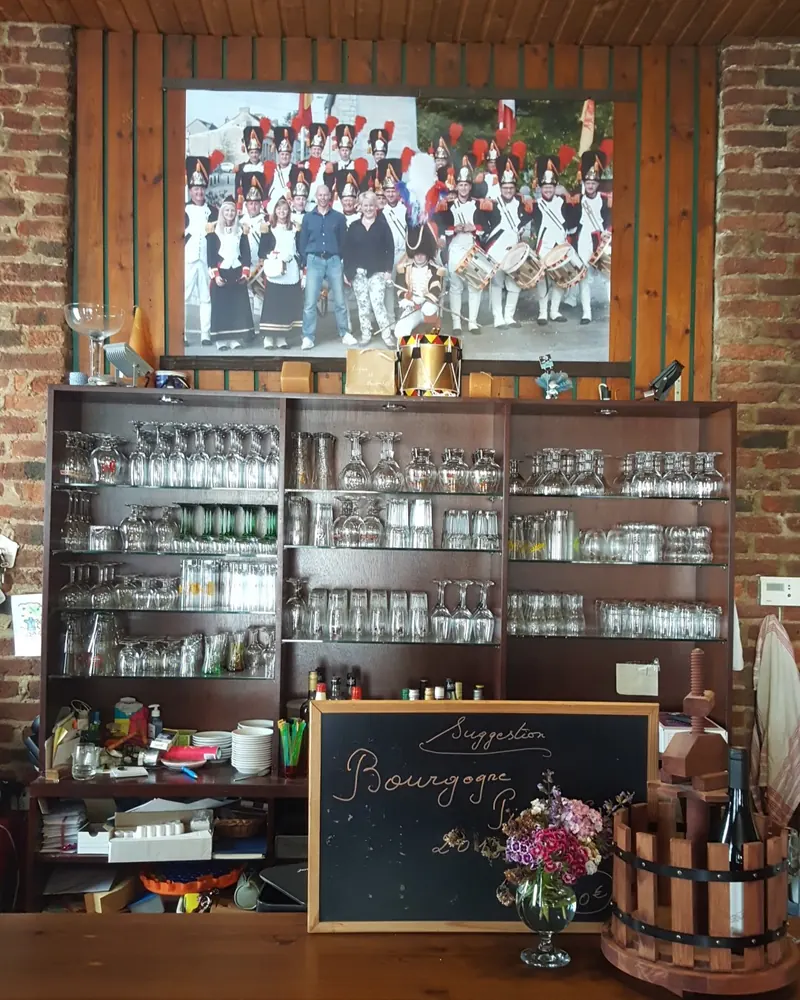
Un vrai relais de village
Murs de briques, plafond de bois, sol rouge et, au-dessus du bar, la photo de la fanfare : la salle a gardé son caractère. On y vient à deux, en famille ou en grande tablée.
« Personnel sympathique et lieu rustique magnifique. »
Elodie M. · avis Google
en cuisine ils ont préparé une petite omelette pour ma fille de 23 mois
Mel P.
Notre petit chien a reçu de l'eau sans que nous le demandions.
Philippe O.
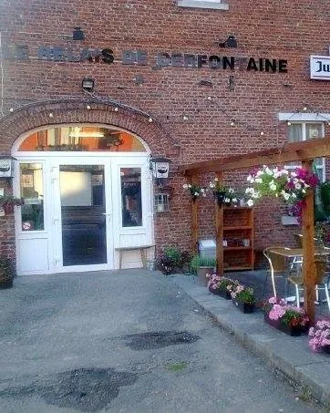
La terrasse couverte
Sur la place du Monument, une terrasse abritée, des fleurs devant l'entrée et un grand sapin pour l'ombre. Une adresse à quelques minutes des barrages de l'Eau d'Heure.
« De plus la terrasse est sympa les jours estivales. »
Cindy P. · avis Google
Ils y reviennent
Note de 4,6 sur 5 sur la fiche du Relais.
Horaires
| lundi | fermé |
|---|---|
| mardi | fermé |
| mercredi | fermé |
| jeudi | 18 h – 21 h |
| vendredi | 18 h – 21 h |
| samedi | 11 h 30 – 14 h18 h – 21 h |
| dimanche | 11 h 30 – 14 h18 h – 21 h |
Réservation conseillée · surtout le week-end et les jours de fête
Terrasse couverte · sur la place du Monument